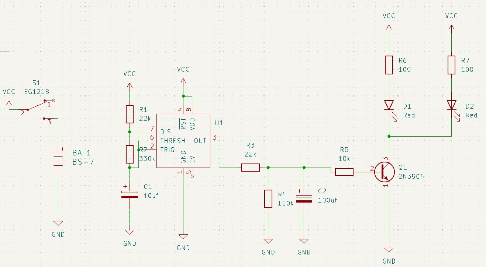
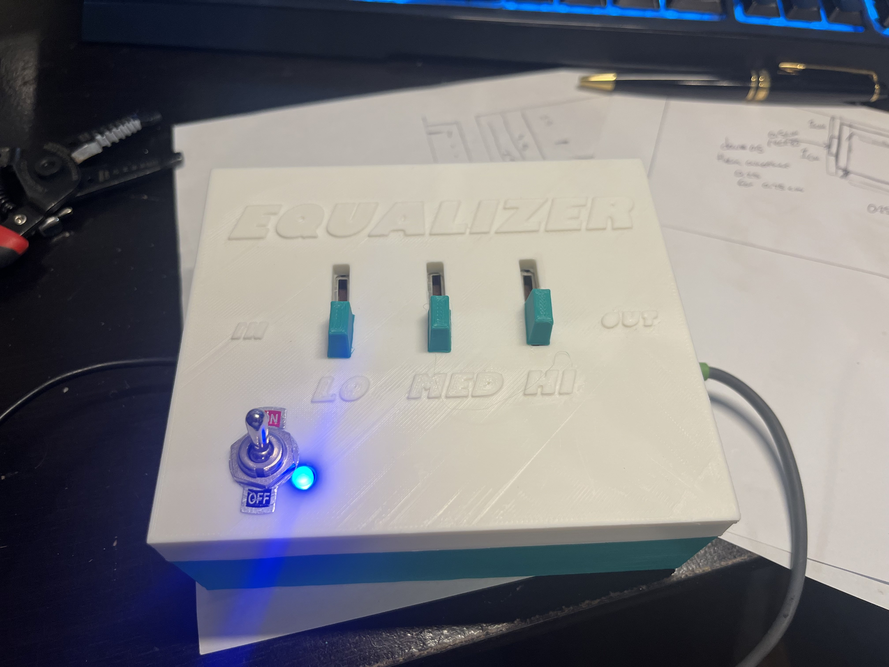
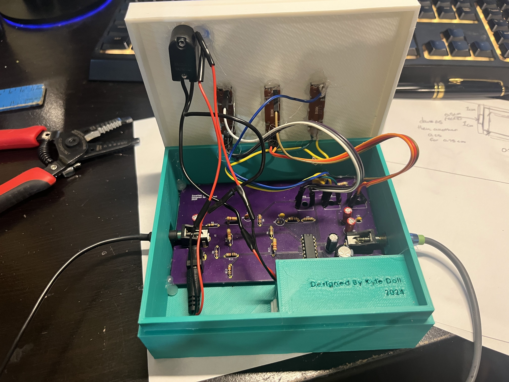

About Me
Kyle Doll is a 22-year old Electrical Engineer who has a passion for creation. This page serves as a hub for links to all of his work.
Kyle graduated from the University of Washington in June of 2024 with a Bachelor's of science in Electrical Engineering with a concentration on Embedded Systems.
His Strengths Include:
- HDL languages (Verilog / System Verilog)
- Timing analysis and Debugging
- Embedded schedulers such as FreeRTOS
- Problem solving
- Technical writing
Circuit Theory
Course Code: EE233
Taken: Autumn 2023
Topics Covered: Phasors, operational amplifiers, frequency response, two port network theory.
Signals, Sytems, and Data I
Course Code: EE242
Taken: Spring 2023
Topics Covered: Signal processing on continuous and discrete signals, convolution, Fourier transforms.
Digital Circuits and Systems
Course Code: EE271
Taken: Winter 2023
Topics Covered: boolean algebra, state machines, RTL, programmable logic, ALU, handshaking
Devices and Circuits I
Course Code: EE331
Taken: Autumn 2023
Topics Covered: semiconductor diodes, NMOS, CMOS, digital circuit logic.
Signals, Systems, and Data II
Course Code: EE342
Taken: Spring 2023
Topics Covered: signal processing, Two-sided laplace transforms, Z-transforms, FFT, Multi-rate signal processing, machine learning.
Design of Digital Circuits and Systems
Course Code: EE371
Taken: Spring 2023
Developed complex systems in RTL including: an audio filter, line drawing algorithm, and a drawing application.
Intro to Communication Networks
Course Code: EE419
Taken: Spring 2024
Topics Covered: Computer network architecture and protocols. Network routing, congestion control, flow control, transport protocols, network security.
Control System Analysis I
Course Code: EE447
Taken: Spring 2023
Topics Covered: pole-zero analysis, root locus and frequency response, control theory.
designed control system for "smart" miniature car.
Computer Architecture I
Course Code: EE469
Taken: Autumn 2023
Taught assembly and machine language for ARM devices. Developed 5-stage pipelined CPU.
Introduction to Embedded Systems
Course Code: EE474
Taken: Winter 2024
Topics Covered: working with modern embedded microcontrollers and schedulers.
VLSI II
Course Code: EE477
Taken: Winter 2024
Hands on learning with industry standard CAD tools including Cadence (Virtuoso, DRC, LVS) and Avanti (Hspice).
Engineering Entrepeneurial Capstone
Course Code: EE497 / EE498
Taken: Winter 2024 - Spring 2024
Worked with University of Washington's QT3 Quantum computing lab to develop an embedded subsystem for single atom detection.
555 Name Badge
My first goal after graduating college was to enhance all the skills that I felt I had missed out on during college, the first being PCB design.
I felt that learning PCB design would not only be a valuable skill while looking for a career but also widen my options when creating future projects.
For my first PCB, I followed an amazing tutorial on using KiCAD, a free CAD software.
For this project, I designed a PCB board that functions as a name tag. The board has a small white space to place your name and flashing LEDs controlled by a 555 timer for flair.
After creating the design, I ordered the board from Oshpark and all of my parts from Digikey.
Once all my parts arrived, I soldered the PCB. Below is a gif of the final product.
Link to the kiCAD tutorial I followed
PCB Audio Equalizer
After the success of the of the PCB nametag I decided I wanted to delve a bit further into PCB design.
This time not following a guide, making all of the design decisions on my own. I admittedly still based my design
off of one found online because I wanted to ensure that my only failpoint would be the PCB and not the circuit. The equalizer I
created uses the same circuit components as the schematic I followed (linked below) but I did have to change the way the
system received input and the way the system received power. I chose new components with premade footprints on digikey
and adjsuted the design accordingly.
Upon receiving the PCB from OSHpark I had no major issue assembling the board and creating a housing for it. I also opted to include
a power switch and an indicator LED.
The only issue with the system is it is in mono and I do not have a mono auxilary cable. So right now the equalizer is only playing music on
the left side of my sound system. I have ordered an adapter in the mail and it should be here in a few days.
Link to the project that inspired me to do this